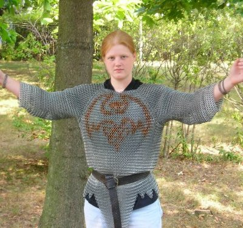
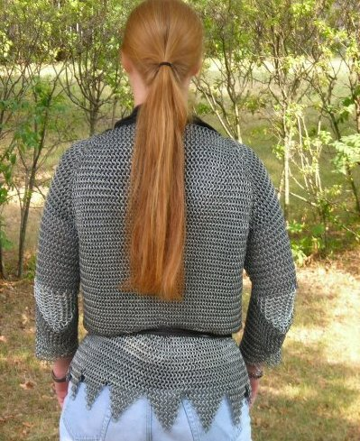

Fantasy Hauberk:
Finished January 29, 2006
So, as you can see, my second shirt is complete. I think it
took me thirteen months start to finish, but that wasn't solid work all
the way through, not in the least. I could easily have done it in
half or less the time that it actually took. Total work hours
were probably a little over 100h. It has 45 degree seams for the
sleeves, gussets at the elbows (they're really obvious in that second
picture there), and a series of graduated dags on the bottom edge.
The final weight is at right around 30 lbs, and it took two 1/4
mile spools of wire to make. I'm not really one to bother with
ring counts, but a rough estimate would be around 10,000 rings.
I ended up changing the dag arrangement from the September pictures. I didn't really like the one huge rear dag, since it was uncomfortable when sitting down. What put me over the edge was when someone jokingly said, "I like the tail!" So I decided that I really ought to just tear it out and redo the bottom edge with smaller dags. I then used the fabric in the sleeves, which shaved some time off of those.
Galvanized Steel and Bronze
European 4:1
I ended up changing the dag arrangement from the September pictures. I didn't really like the one huge rear dag, since it was uncomfortable when sitting down. What put me over the edge was when someone jokingly said, "I like the tail!" So I decided that I really ought to just tear it out and redo the bottom edge with smaller dags. I then used the fabric in the sleeves, which shaved some time off of those.
Rings:
14 ga 3/8 IDGalvanized Steel and Bronze
European 4:1
September 2005
Work progresses on the hauberk! It's going to be damn heavy....
The thing is actually almost done, and it is certainly wearable at this point. All I have to do is make the sleeves, but that is an intimidating project in itself. They'll add a lot to the weight, too.
It already weighs close to twenty pounds.
The thing is actually almost done, and it is certainly wearable at this point. All I have to do is make the sleeves, but that is an intimidating project in itself. They'll add a lot to the weight, too.
It already weighs close to twenty pounds.
August 2005
These pictures are actually being added to the site in November...um...left the film at Walgreens for three months...yeah, oops.
You can see the front and back panels are done here, and the left side has been filled in. The inlay has changed a little since then. I didn't like the dragon's head down like that, it wasn't as visible, so I changed it to what it is in the September pictures.
And by the way, thank you Leather Lore for my new belt!
Inlay
This is a dragon, but if you thought it was a bat at first glance, you
weren't the first one. *sigh*
I started this part of the hauberk on May 17 and finished it on June 26, 2005. Due to springback, the bronze rings are a little larger than the steel ones, which does some funny things to the weave. Oh well. I like it anyway.
I started this part of the hauberk on May 17 and finished it on June 26, 2005. Due to springback, the bronze rings are a little larger than the steel ones, which does some funny things to the weave. Oh well. I like it anyway.